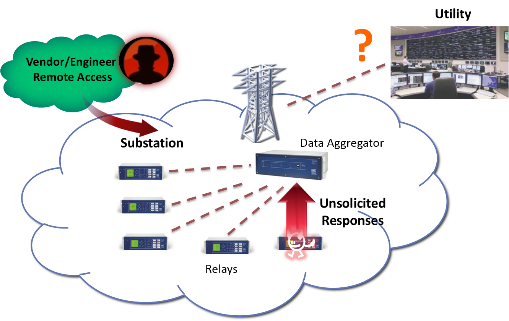
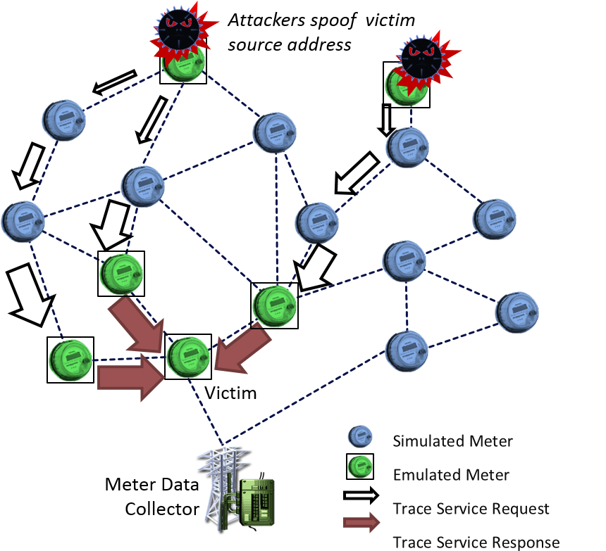
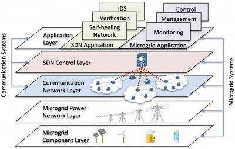

Modeling Methodologies and Testing/Evaluation Platform
Research on various smart grid technologies requires high-fidelity experiments in realistic, large-scale settings. We are creating DSSNet, a high-fidelity, highly scalable simulation and emulation platform for security evaluation in power grid control networks.
We have utilized the testbed to study various cyber attacks in the smart grid, including:
Distributed denial-of-service attack (DDoS) in an advanced metering infrastructure (AMI)
Event buffer flooding attack on a supervisory control and data acquisition (SCADA) system
Transactive control network protocol

Event buffer flooding attack in SCADA systems

c12.22 trace-service-based DDoS attack in AMI networks
Toward a Cyber Resilient and Secure Smart Grid Using SDN
To build a resilient and secure smart grid in the face of growing cyber-attacks and human errors, we study an SDN-based communication network architecture for smart grid operations. We also leverage the global visibility, direct networking controllability, and programmability offered by SDN to investigate multiple security and resilience applications, e.g.:
Real-time and uncertainty-aware network verification
Context-aware intrusion detection

Selected Publications
Yanfeng Qu, Gong Chen, Xin Liu, Jiaqi Yan, Bo Chen, and Dong Jin.
Cyber-Resilience Enhancement of PMU Networks Using Software-Defined Networking.
2020 IEEE International Conference on Communications, Control, and Computing Technologies for Smart Grids (SmartGridComm), November 2020.
Best Paper Award[pdf]
Christopher Hannon, Jiaqi Yan, Dong Jin, and Yuan-An Liu.
A Distributed Virtual Time System on Embedded Linux for Evaluating Cyber-Physical Systems.
2019 ACM SIGSIM Conference on Principles of Advanced Discrete Simulation (PADS), June 2019.
Best Paper Award[pdf]
Christopher Hannon, Jiaqi Yan, Dong Jin, Chen Chen, and Jianhui Wang.
Combining Simulation and Emulation Systems for Smart Grid Planning and Evaluation.
ACM Transactions on Modeling and Computer Simulation (TOMACS), August 2018.
[pdf]
Dong Jin, Zhiyi Li, Christopher Hannon, Chen Chen, Jianhui Wang, Mohammad Shahidehpour, and Cheol Won Lee.
Towards a Cyber Resilient and Secure Microgrid Using Software-Defined Networking.
IEEE Transactions on Smart Grid, Special section on Smart Grid Cyber-Physical Security, May 2017.
[pdf]
Hui Lin, Chen Chen, Jianhui Wang, Junjian Qi, Dong Jin, Zbigniew Kalbarczyk, and Ravishankar K. Iyer.
Self-Healing Attack-Resilient PMU Network for Power System Operation.
IEEE Transactions on Smart Grid, July 2016.
[pdf]